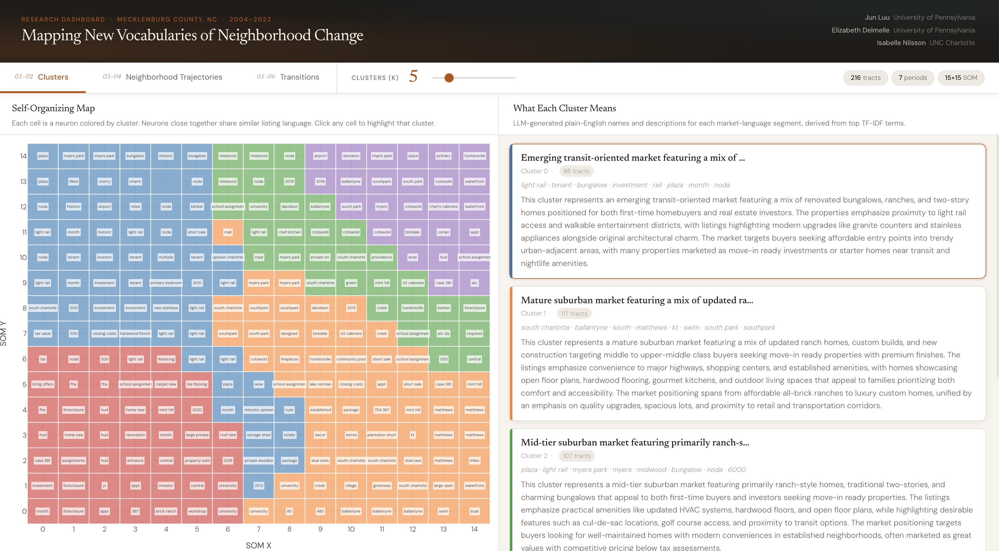
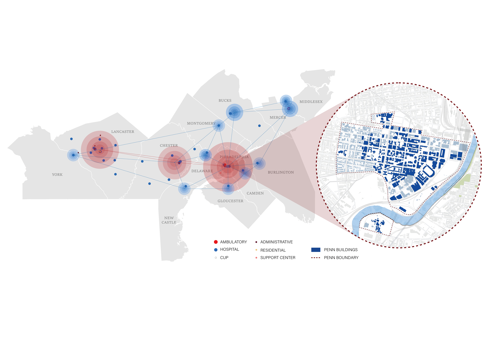
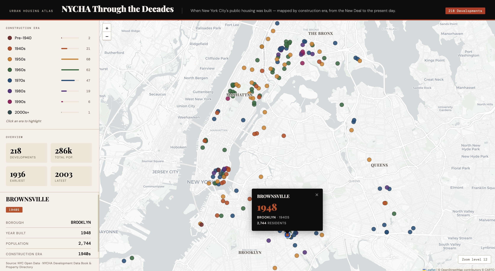
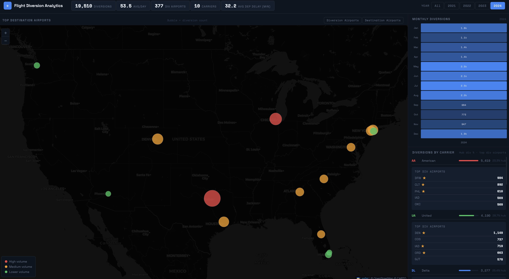
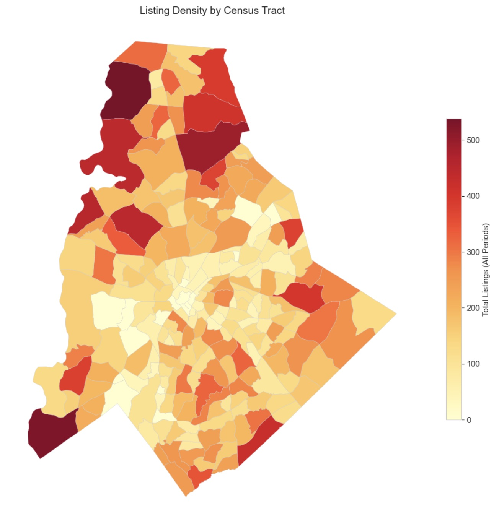
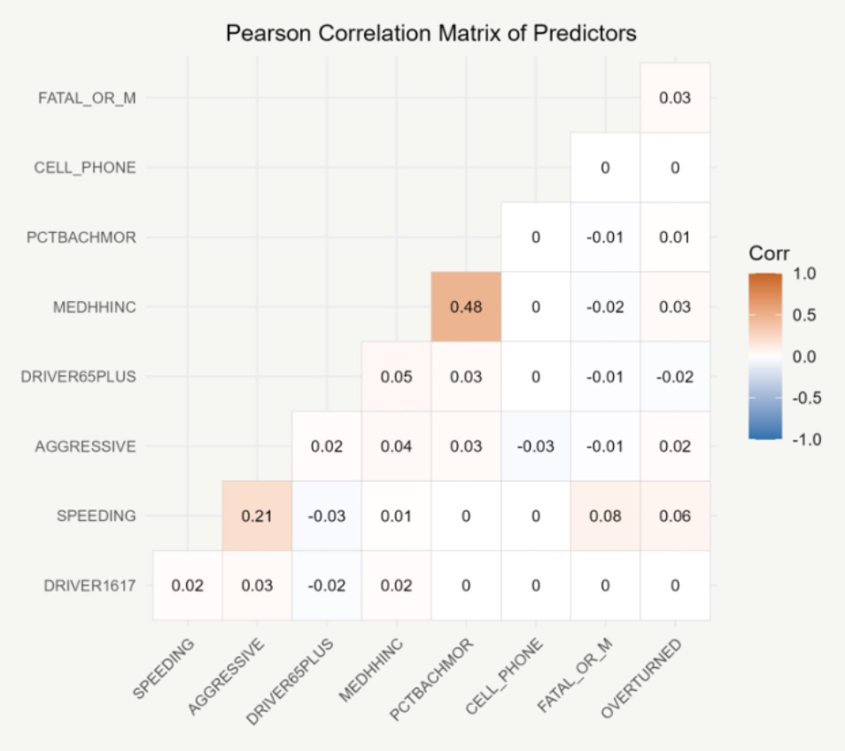
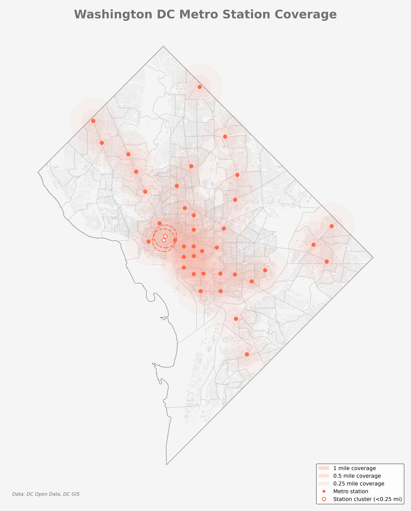

Research & Projects

SOM + sentence embeddings on MLS listing language. Mecklenburg County, NC. AAG 2026.
Poisson model with temporal and spatial lags to forecast eviction filings by census tract.

Mapping the physical footprint of Penn across the greater Philadelphia region.

Mapping when and where New York City's public housing was built, from the New Deal to today.

Dashboard analyzing flight diversion patterns using BTS On-Time Performance data. CAtRES, Penn.

Batch API pipeline for augmenting sparse tract-period real estate data.

Logistic regression model identifying predictors of alcohol-involved crashes in Philadelphia.

Mapping transit accessibility by walking distance across Washington DC. 30 Day Map Challenge.
Analyzing climate finance mechanisms for urban resilience in post-apartheid South Africa.